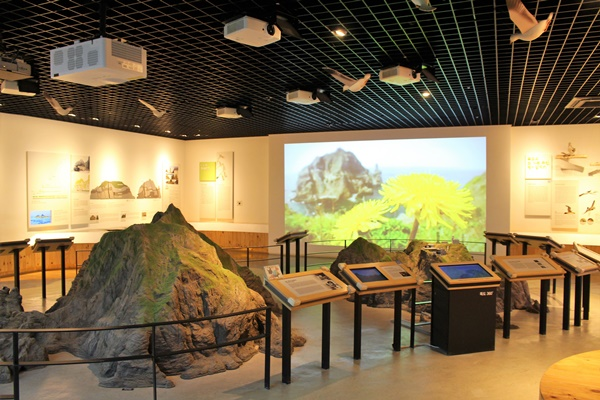

독도는 천혜의 자연환경과 풍부한 생태계를 간직한 아름다운 섬입니다.
천혜의 자연과 독특한 생태계를 직접 체험하며 독도의 숨겨진 아름다움을 만나보세요!
독도 모형
자연관에서는 독도의 모습을 1/120으로 축소 제작한 ‘독도모형’이 주목된다.
독도 자연관은 독도의 자연 환경, 생태계, 역사, 문화 등을 소개하는 전시 공간입니다.
1. 지리와 지질: 독도의 형성 과정, 지질학적 특징, 지형도 등을 설명합니다.
2. 생태계: 독도에 서식하는 다양한 식물과 동물들에 대한 정보를 제공합니다. 독도의 해양 생물과 조류, 그리고 특정 고유종들에 대한 설명이 포함됩니다.
3. 역사와 문화: 독도의 역사적 배경, 독도와 관련된 역사적 사건, 그리고 독도가 가지는 문화적 의미를 전시합니다.
4. 환경 보호: 독도의 환경 보호와 관련된 활동 및 정책에 대한 정보를 소개합니다. 독도의 생태계 보존을 위한 노력과 그 중요성에 대해 강조합니다.
